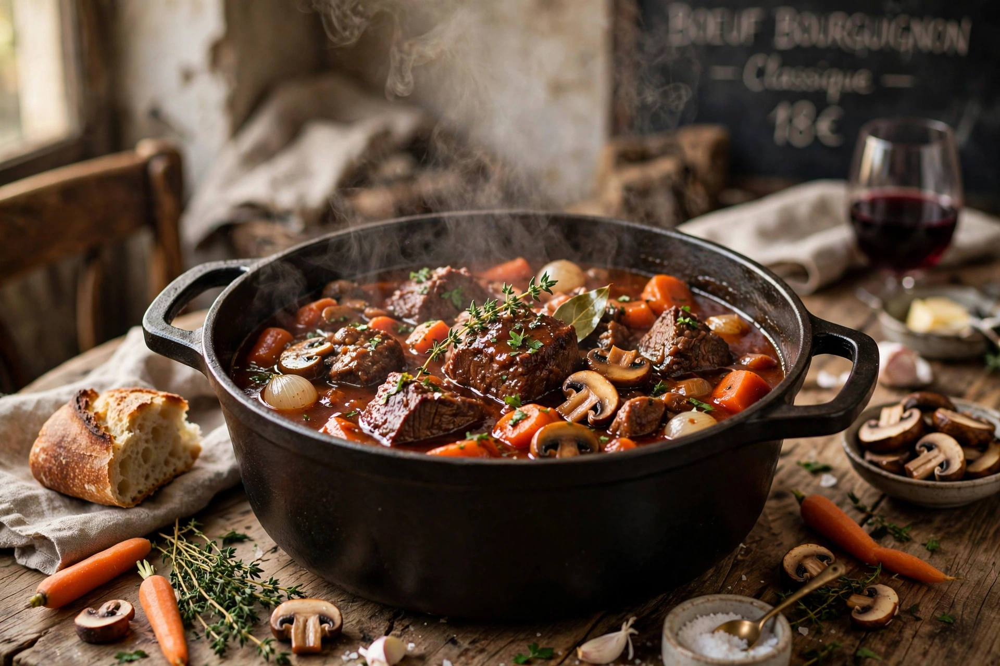

Bœuf bourguignon (beef Burgundy) is a French beef stew braised in red wine — traditionally Burgundy Pinot Noir — with beef stock, garlic, onions, carrots, mushrooms, and pearl onions, garnished with lardons. It is a classic example of peasant food refined into haute cuisine.

Tough cuts such as chuck are slowly braised until tender; the sauce is thickened, sometimes with a beurre manié. Auguste Escoffier codified the recipe in the early 20th century. Julia Child called it "certainly one of the most delicious beef dishes concocted by man" in Mastering the Art of French Cooking (1961), and her version popularised it in America; the dish featured memorably in the film Julie & Julia.
French cuisine · Coq au vin · Julia Child
Recreated from memory.